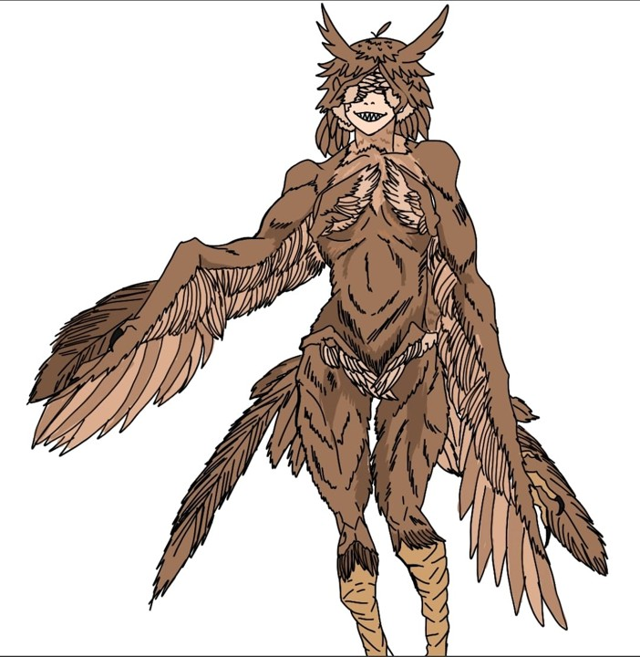
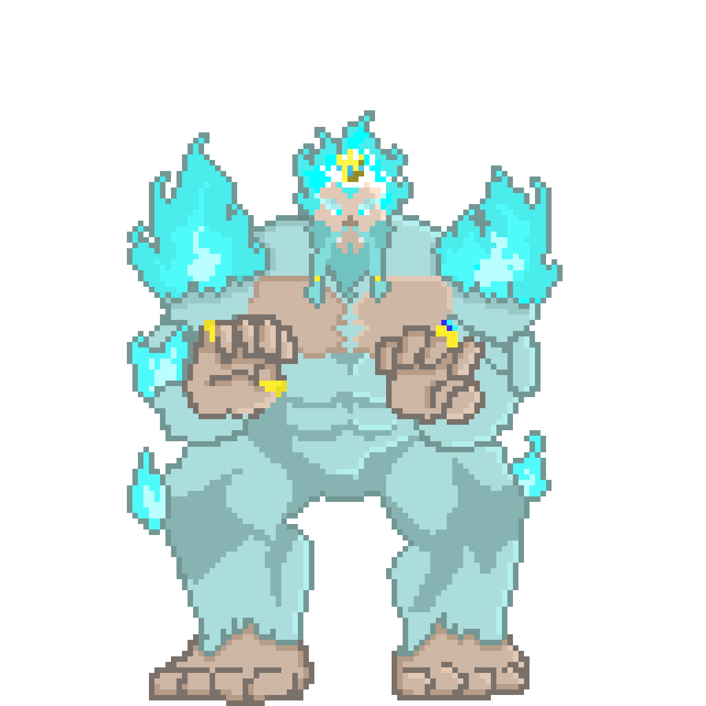

Símbolo do Orgulho - O Guerreiro do Tempo

Uma figura imponente que exala arrogância em cada movimento, a criatura da soberba é um ser de poder e vaidade, incapaz de aceitar suas próprias falhas.
Símbolo da Inveja – A Sombra do Trono

Uma mulher outrora honrada, agora reduzida a uma sombra de sua antiga glória. Foi, em tempos passados, uma das mais habilidosas do reino. No entanto, sua lealdade não era ao rei, mas sim à própria ambição.
Símbolo da Ira – O Rei de Nada

Aquele que há vestígios, jaz o monarca no vazio, solitário no abismo onde o tempo já não se faz presente, consumido pela própria fúria.
Símbolo da Gula – O Devorador Abissal

Uma criatura insaciável, condenada a devorar tudo ao seu redor, representando o apetite sem fim que consome até a própria essência.
Símbolo da Impureza – Imperatriz Carmesim (Esboço)
Majestosa e impiedosa, penas afiadas como lâminas e olhos que alcançam além do horizonte. Domina os céus, tornando o próprio ar um campo de batalha.
Símbolo da Preguiça – Flagelo Gélido (Esboço)
Habita um vulcão congelado e vive entre o sono e a vigília. Não luta por vontade, mas por necessidade, símbolo da estagnação eterna e da força que recusa ser usada.